SoL-Engine · Research Blog
High-Resolution Video Refinement with Few-Step Diffusion
The H3 base model drafts a video at low resolution, and the official H3-Regenerate-2K API regenerates it at 2K, but that model is not open. Open-H3-Regenerate-2K is an open replacement: a three-step H3 diffusion pass that redraws the draft’s detail at full resolution.
Abstract
The H3 base model generates video at low resolution, and the official H3-Regenerate-2K API regenerates it at 2K. That model is not open source. Open-H3-Regenerate-2K is our open replacement: it takes the low-resolution H3 draft and regenerates its detail at high resolution in a few diffusion steps.
Why an Open Regenerate Model?
H3 makes a video in two steps. The base model settles content and motion at low resolution, where sampling is cheap. H3-Regenerate-2K then redraws the draft at 2K, so faces, fabric, fur and foliage hold up at full size.
Only the first step is open. H3-Regenerate-2K is a hosted API without released weights, so people building on the open H3 base model cannot run it on their own GPUs, adapt it, or go beyond what the service offers.
Open-H3-Regenerate-2K fills that gap with an open model for the same step: it starts from the H3 draft, keeps its content and motion, and regenerates the detail at full resolution.


From a Low-Resolution Draft to 2K
Open-H3-Regenerate-2K wraps a frozen H3 transformer and video VAE. It takes the draft and its prompt and returns the same scene at the target resolution.
- Encode. The H3 VAE encodes the draft once.
- Enlarge. H3-Latent-Upscaler maps the latent onto the target grid.
- Regenerate. The enlarged latent is partly re-noised and denoised in three steps.
- Decode. The H3 VAE turns the result back into frames.

Upscaling alone adds no detail. It carries layout, color and motion onto the larger grid; the three diffusion steps draw the surfaces at that size.
Results
3.1Against Official H3
The same input regenerated by the official H3-Regenerate-2K API and by ours, both at 2560 × 1440. Move the magnifier over the frame; the zoom windows show the same region of both outputs.
Hover to move the magnifier · scroll to zoom · click to switch the frame
3.2One Draft, Every Resolution
One 768 × 512 draft, regenerated natively at 768P, 1080P, 2K and 4K; nothing is resized after generation. Each size is its own regeneration, so small details can differ between sizes.
Hover to move the magnifier · scroll to zoom · click to switch the frame
3.35 to 15 Seconds
Clips from 5 to 15 seconds are refined in a single pass. This 15-second clip, 360 frames, is regenerated at 2K in one run.
Key Technologies
4.1Building Training Pairs
The refiner learns from real, high-quality clips at 1280 × 704 and 2560 × 1440. Each clip is shrunk by 8× to 64× with an antialiased bilinear filter, resized back to its original size, and encoded by the H3 VAE. The model learns to turn the latent of this degraded copy into the latent of the original.
4.2Latent Upscaling
H3-Latent-Upscaler is a learned 3D convolutional upscaler for H3 latents. At 2K it maps a 36 × 64 latent grid to 90 × 160, 2.5× per side, leaving the 24 channels and 37 latent frames unchanged. For 4K it is applied twice, each time within its trained range.

4.3Three-Step Regeneration
Sampling starts from the upscaled latent mixed with noise at σ₀ = 0.909 and takes three Euler steps, 0.909 → 0.857 → 0.667 → 0, without classifier-free guidance, so each step is one transformer call. The H3 transformer carries three merged adapters: our refiner LoRA (rank 384, 5,000-step EMA, strength 0.7), the LightX2V FL2VA Turbo adapter for few-step sampling, and LMS Sharp.
4.4Inference Optimization
With SoL-Engine, the full pipeline (an 8-step 1344 × 768 H3 draft, latent upscaling, three refine steps at 2560 × 1440 and VAE decoding) goes from 112.85 s to 32.05 s per five-second video on a single B200, 3.5× faster.
Sparse attention saves the most: Sol-Attn1 block-sparse attention removes 47.35 s. A compiled and distilled VAE, fused kernels with a whole-forward CUDA graph, MXFP8 linear layers and keeping both stages’ weights in memory account for the rest.
Warm inference on one GPU, median of three runs; model loading, text encoding and MP4 writing are not included. Small numerical changes in few-step sampling lead to a different but equally valid video for the same seed.
Experiments
We compare against the official H3-Regenerate-2K API with two automatic metrics on RefinerBench-150 and with a user study. RefinerBench-150 has 150 videos covering everyday scenes, sports and dance, animals, vehicles, landscapes, portraits and fast camera motion. Both systems receive the same input and output 2560 × 1440.
5.1VBench
VBench rates six dimensions on a 0–1 scale. Subject and background consistency check that identity and scene stay stable over time, motion smoothness and dynamic degree describe the motion, and aesthetic and imaging quality judge how each frame looks. Following SoL-Refiner, the average is the unweighted mean of the six, not the leaderboard total.
Ours is higher on aesthetic quality, imaging quality and subject consistency. The official API is slightly ahead on motion smoothness and dynamic degree, and background consistency is level.
5.2UniPercept
UniPercept scores perceived quality from 0 to 100 along three axes: aesthetics (IAA), technical image quality (IQA), and structure and texture (ISTA). The average is the mean of the three.
Ours is higher on all three axes, by about eight points on aesthetics and image quality and three points on structure and texture.
The official API did not return one RefinerBench-150 video, so VBench and UniPercept averages use the 149 videos both systems produced.
5.3User Study
The blinded pairwise study uses 50 cases: 25 RefinerBench-150 videos and 25 prompts shared online, mostly on X. Each trial shows the input as a reference and the two 2560 × 1440 results as A and B in random order. Participants pick the one that looks better, weighing clarity, detail, naturalness, artifacts and temporal stability. Each session covers ten cases; 20 completed sessions give 200 judgments.
Credits
Acknowledgements
- SoL-H3Speed-of-light H3 inference.
- SoL-EngineInference engine and the acceleration in Section 4.4.
- MiniMax H3Base model and VAE; the official H3-Regenerate-2K API is the baseline.
- H3-Latent-UpscalerLatent upscaler.
- SoL-RefinerRefinement recipe and the VBench protocol.
- LightX2VFL2VA Turbo adapter.
- VBenchVideo quality metrics, with UniPercept.